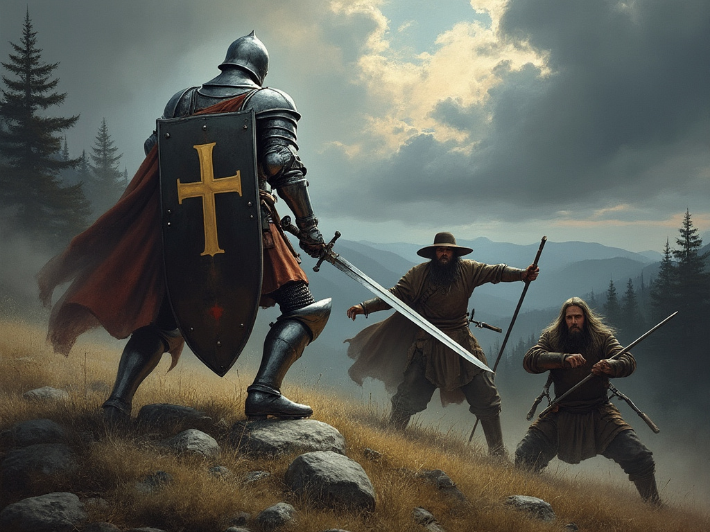
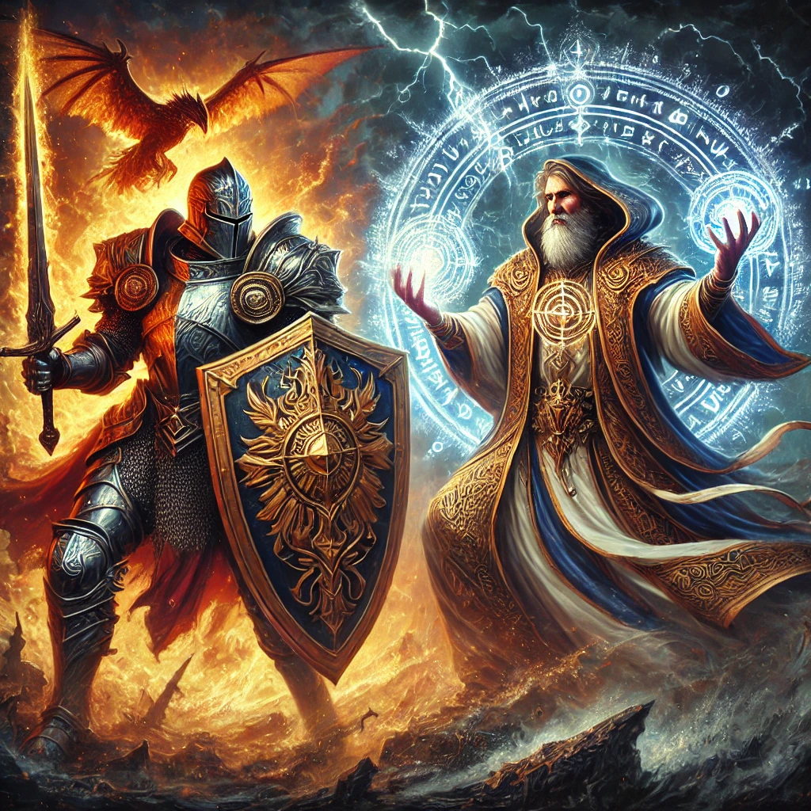

In role-playing games, determining how characters and creatures
absorb damage is crucial for creating an engaging and balanced combat
system. Traditional systems like D&D and Pathfinder use a fixed
Armor Class (AC) value, including variants like touch AC and flat-footed
AC. Attacks that meet or exceed these values succeed, while those below
fail entirely.
However, this approach has two main drawbacks:
It lacks a damage reduction mechanic, resulting in an all-or-nothing
outcome for attacks.
It doesn't adequately support magical damage reduction, limiting
narrative possibilities such as a knight dramatically shielding an
orphan from a dragon's fiery breath.
To address these issues, we propose a new system that allows armor to
provide both complete protection and graduated damage reduction for both
physical and magical attacks.
1. Armor System
1.1 Magical Damage Reduction
For magical attacks (e.g., fireballs), compare the armor's
enchantment DC to the attack's DC. The armor enchantment DC represents
the power of the enchantment spell that was used to enchant the armor.
The attack DC represents the power of the incoming spell that the armor
has to mitigate.
Armor DC vs Attack DC
Damage Reduction
Higher by 50%+
100%
Higher by 40-49%
90%
Higher by 30-39%
80%
Higher by 20-29%
70%
Higher by 10-19%
60%
Equal or higher by 0-9%
50%
Lower by 1-10%
40%
Lower by 11-20%
30%
Lower by 21-30%
20%
Lower by 31-40%
10%
Lower by 41%+
0%
1.2 Physical Damage Reduction
For physical attacks, compare the armor class to the incoming attack
roll.
Armor Class vs Attack Roll
Damage Reduction
Higher by 50%+
100%
Higher by 40-49%
90%
Higher by 30-39%
80%
Higher by 20-29%
70%
Higher by 10-19%
60%
Equal or higher by 0-9%
50%
Lower by 1-10%
40%
Lower by 11-20%
30%
Lower by 21-30%
20%
Lower by 31-40%
10%
Lower by 41%+
0%
1.3 Armor Types and Materials
Armor Size
Size
Damage Reduction
Reflex Save
Heavy
No change
-10%
Medium
-5%
-5%
Light
-10%
No change
Special Materials
Material
Damage Reduction
Reflex Save
Additional Effects
Adamantine
+10%
-
-
Mithril
+5%
+10%
-
Dragonhide
+5%
-
+20% Elemental reduction (magical only)
Notes:
Elemental reduction for Dragonhide armor depends on the type of
dragon from which the hide was made and only applies to magical
versions.
2. Shield System
Shields, and in particular magical shields are better than armor at
protecting a character against damage. However, to do so, they require
an action investment, while armor mitigates damage automatically.
Enchanted shields can protect zones from AoE spells, and even intercept
magic missiles. The typical enchanted shield protects a zone with a 10
ft radius from AoE spells such as Fireball, Acid Splash, Ray of
Frost.
2.1 General Shield Rules
Can defend against up to twice the number of physical attacks as the
wielder's number of attacks
Requires a successful Reflex save to use
Provides both a Reflex save bonus and an attack roll bonus
2.2 Magical Attack Defense
For magical shields defending against magical or supernatural
attacks:
Shield DC vs Spell DC
Damage Reduction
Higher or equal
100%
Within 10%
90%
Within 20%
80%
Within 30%
70%
Within 40%
60%
Within 50%
50%
2.3 Physical Attack Defense
Shield's attack roll must equal or beat the incoming attack roll for
a complete block
Can defend against twice the number of physical attacks as the
wielder's number of attacks
Magical: Increase damage reduction of all categories by 5%, and
gives an elemental reduction of 20% (depending on the type of dragon
from which the dragonhide was made)
Physical: Increase damage reduction by 5%
3. Interaction with Other
Systems
Barriers: If a personal barrier surrounds the skin, the shield
reduces damage first. For larger barriers (e.g., 5ft radius), the
barrier absorbs damage before the shield.
4. Combat Examples
4.1 Knight vs Bandits

This example demonstrates how the armor and shield mechanics work in
a physical combat scenario.
Characters
Knight Tristan: Tier 2 action economy (5 attacks per turn)
Equipment: Longsword, Shield
Reflex: 19
Shield Attack Bonus: +4
Bandit A: Tier 1 action economy (3 attacks per turn)
Reflex: 17
Bandit B: Tier 1 action economy (3 attacks per turn)
Reflex: 18
Turn 1
Tick 1
Declarations
Bandits A & B: "We rush Knight Tristan."
Knight Tristan: "I'll try to block their attacks and counterattack
Bandit A."
Reflex Order
Tristan (19) > Bandit B (18) > Bandit A (17)
Actions
Tristan's Shield Defense:
Shield Attack Roll: 18 + 4 (bonus) = 22
Bandit Attacks:
Bandit A: 20
Bandit B: 19
Results:
Tristan blocks both attacks (22 > 20 and 19)
Tristan's Counterattack:
Attack Roll: 17 (hits Bandit A)
Damage: 10
Tick 2
Reflex Order
Bandit A (21) > Bandit B (20) > Tristan (15)
Actions
Bandit Attacks:
Bandit A: 25
Bandit B: 21
Tristan's Shield Defense:
Shield Attack Roll: 15 + 4 (bonus) = 19
Results:
Both bandit attacks hit (25 > 19, 21 > 19)
Tristan takes 6 damage from Bandit A and 8 damage from Bandit B
Tristan's Counterattack:
Attack Roll: 24 (Critical threat)
Confirmation Roll: 22 (Critical hit confirmed)
Damage: 20 (Bandit A falls)
Tick 3
Declarations
Bandit B: "I flee this combat."
Knight Tristan: "I can't chase, I'm too slow."
Outcome
Combat ends with Bandit A defeated and Bandit B escaping
4.2 Paladin vs Sorcerer

This example demonstrates how the armor and shield mechanics work in
a magical combat scenario.
Characters
Plutarch (Paladin): Tier 3 action economy for attacks
Equipment: Magical Shield
Reflex: 38
Shield Bonus to Reflex: +25%
Shield DC: 30
Daviau Morin (High Sorcerer): Tier 2 action economy for spells
Reflex: 40
Spell: Quickened Fireball (can cast twice in one tick)
Fireball DC: 35
Fireball Damage: 500 per cast
Turn 1
Tick 1
Declarations
Daviau: "Two Quickened Fireballs on the Paladin."
Plutarch: "I'll block both Fireball spells with one shield
action."
Reflex Order
Plutarch: 38 + 25% (shield bonus) = 47.5
Daviau: 40 + 10% (GM bonus for acting first) = 44
Result: Plutarch acts first
Actions
Daviau's Fireball Attacks:
Spell DC: 35 for each Fireball
Total potential damage: 500 × 2 = 1000
Plutarch's Shield Defense:
Shield DC: 30
Comparison: Shield DC (30) vs Spell DC (35)
Shield DC is about 14.3% lower than Spell DC
This falls in the "Within 20%" category
Damage Reduction: 80%
Results:
Damage after reduction: 1000 × (1 - 0.80) = 200
Plutarch takes 200 fire damage
[Previous content remains unchanged]
4.3
Mixed Combat: Elven Ranger vs Orc Shaman and Warrior
This example demonstrates how the armor and shield mechanics work in
a scenario involving both physical and magical attacks, as well as
different armor and shield types.